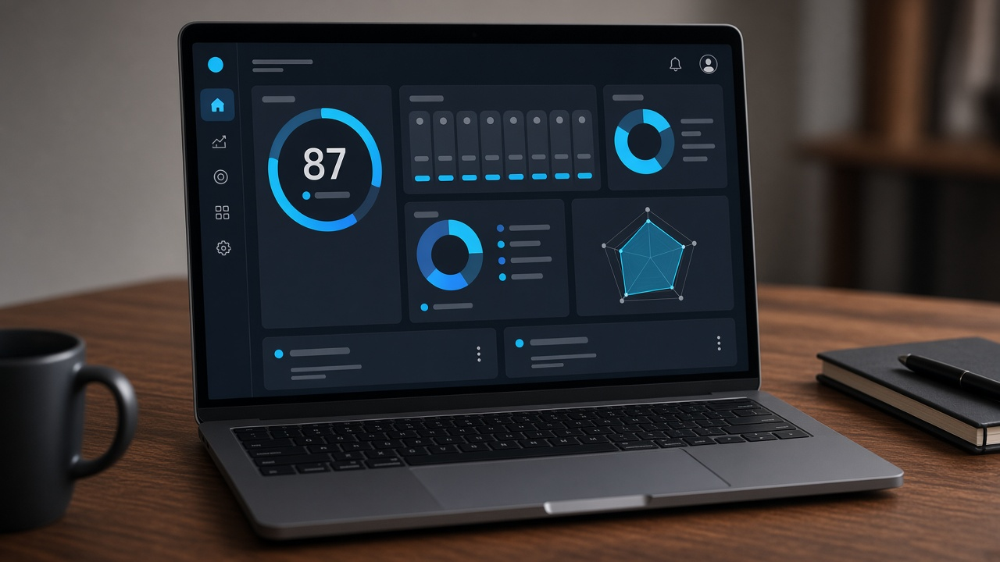
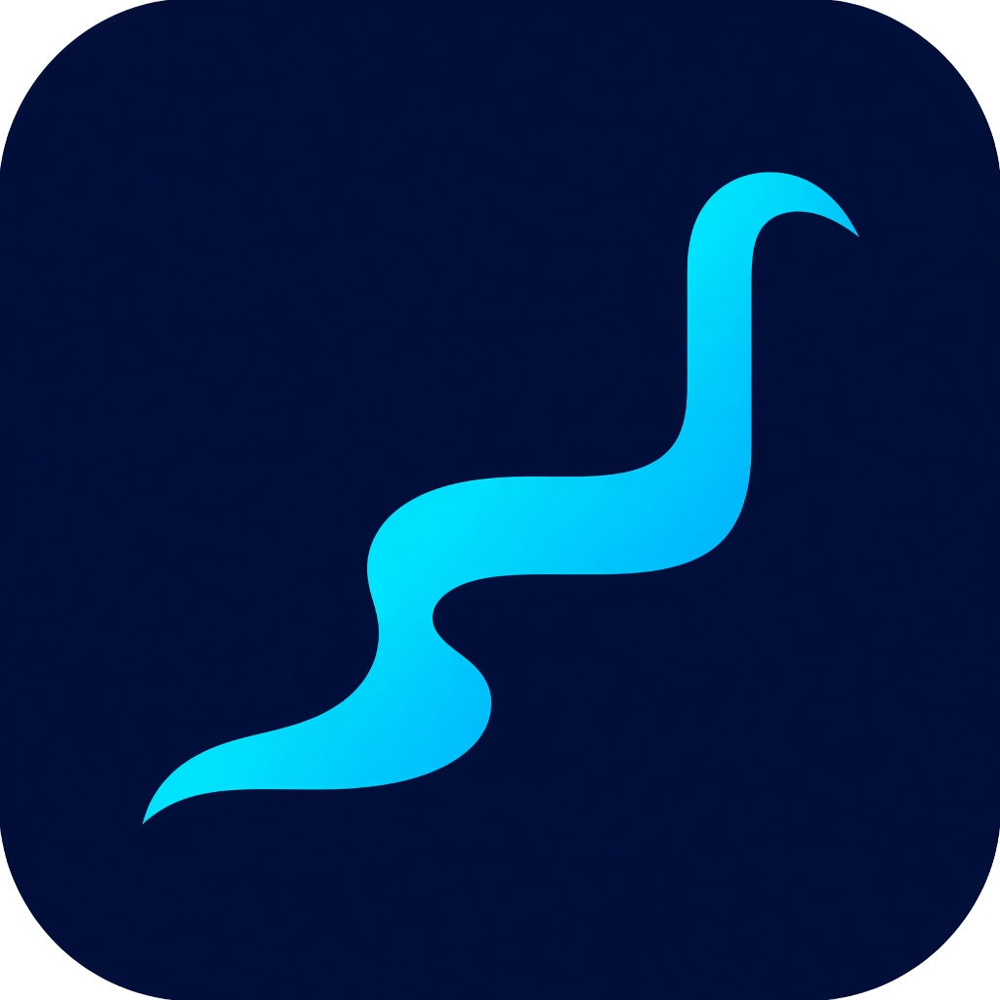
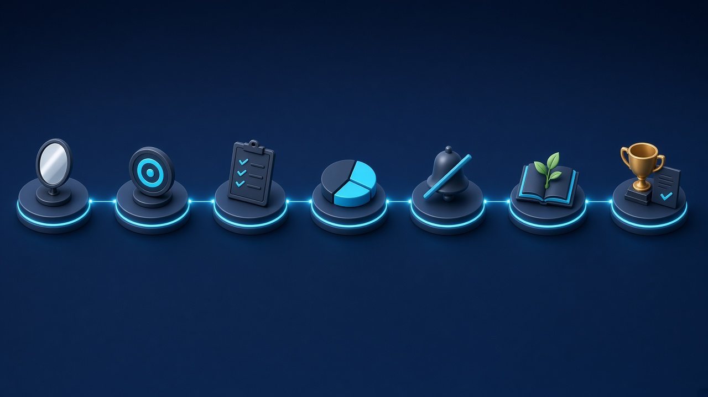
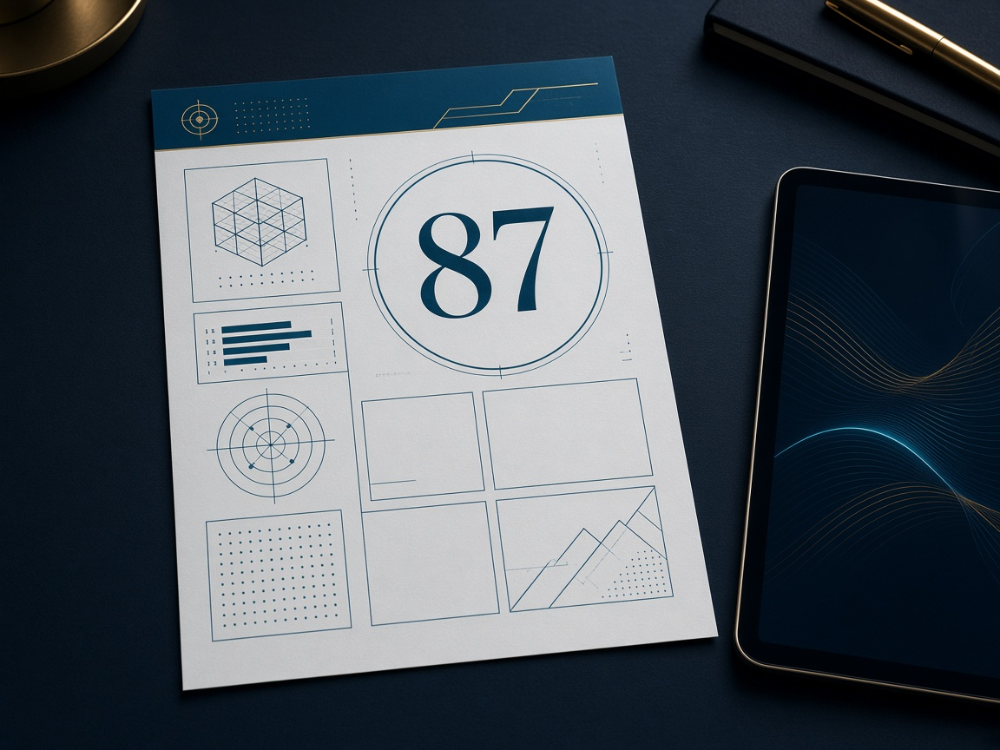

Live dashboard & analytics
Track completed days, task impact, information diet, and focus sessions. When the week is done, unlock a Focus Score with a breakdown of what is working.

FocusFlow7-day focus system
Understand what matters. Remove distractions. Spend your time on high-impact work. FocusFlow guides you through a structured week, then uses AI to generate your personal Focus Blueprint.
Most people know they should “just concentrate,” then drown in low-impact tasks, noise, and information they never needed. FocusFlow turns that into a week of decisions you can actually keep.
The week
One theme per day. Unlock the next step as you complete the last.

Inside the product

Track completed days, task impact, information diet, and focus sessions. When the week is done, unlock a Focus Score with a breakdown of what is working.

Gemini turns your week of answers into a one-page plan you can actually follow next week.
Practice declining requests that steal high-impact time, then save the scripts that feel true to you.
How it works
Create a free account. Your progress, goals, and sessions stay tied to you.
Answer the day’s prompts, log tasks, run focus sessions, and trim information waste.
After Day 7, generate an AI report, Focus Score, and a personal blueprint.
No waitlist. Create an account and begin Day 1 — Self Discovery.